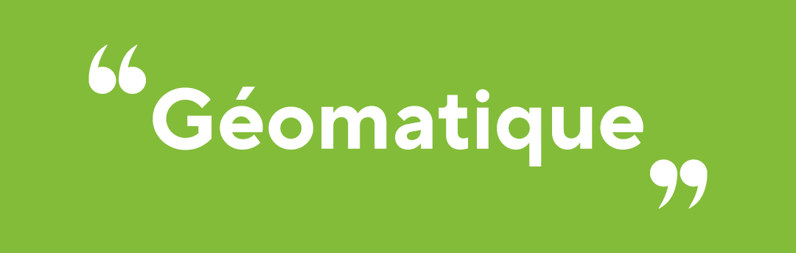
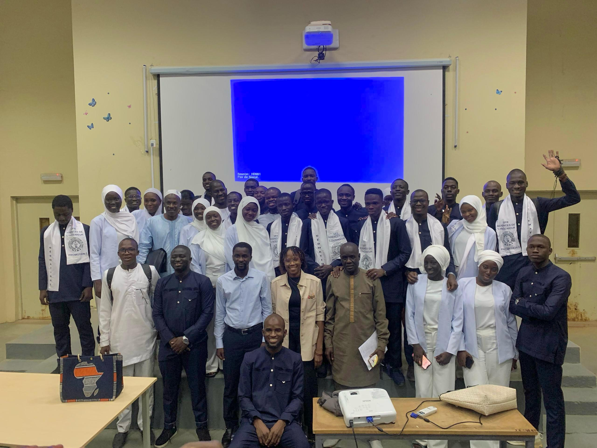
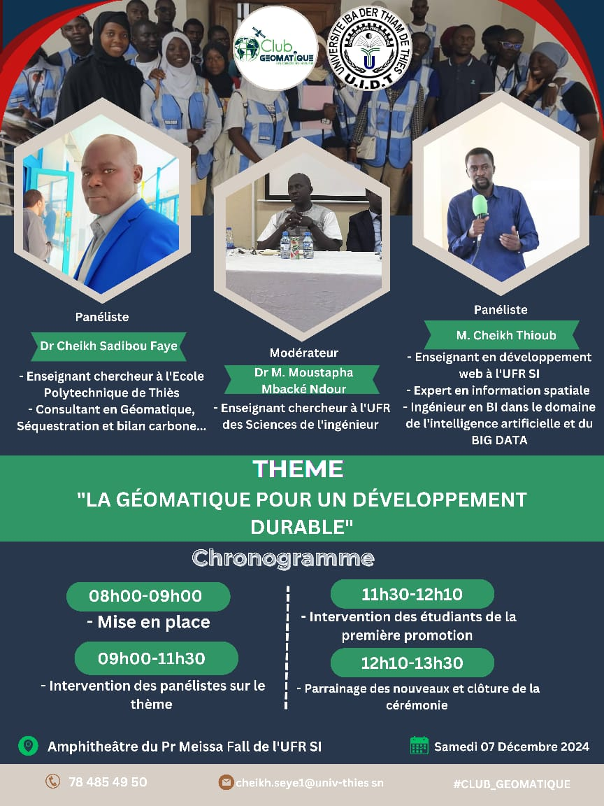
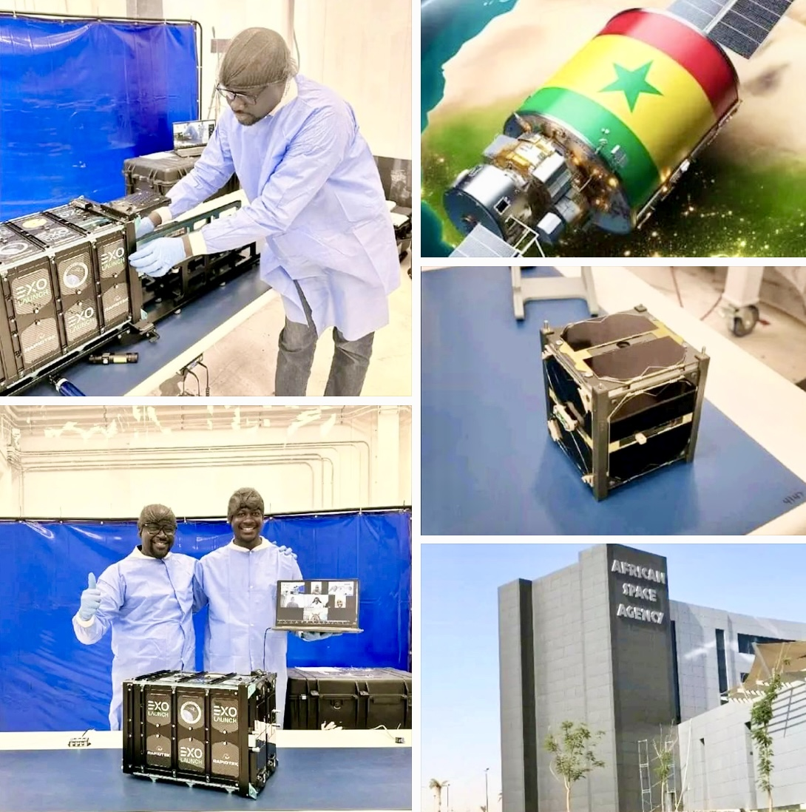
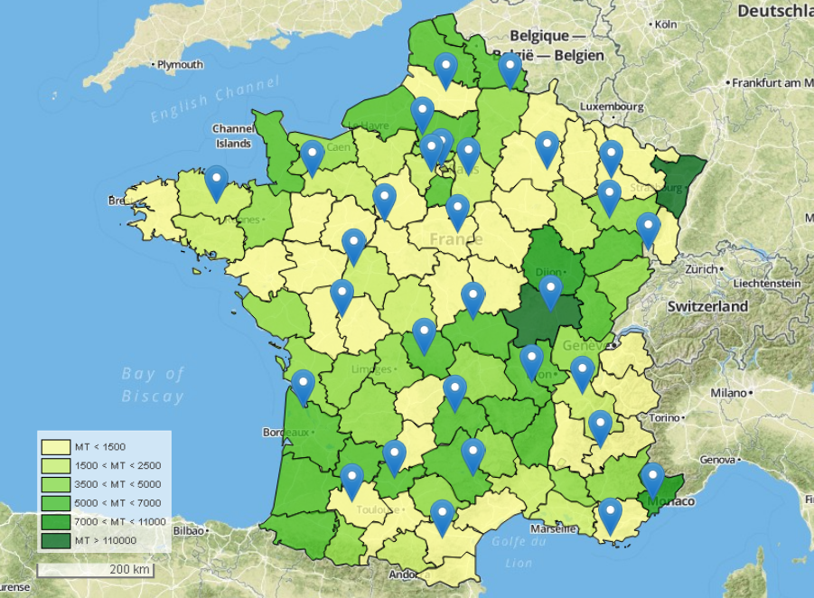
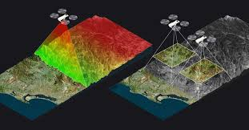
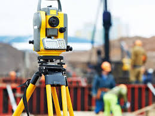
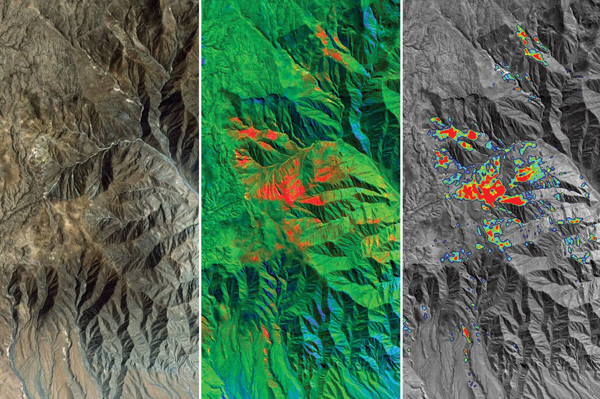

La géomatique, c'est la rencontre entre les sciences géographiques et l'informatique.
Il s’agit d’un ensemble de technologies permettant de modéliser, de représenter et d’analyser
le territoire pour en faire des représentations virtuelles : géolocalisation, imagerie spatiale, bases de données,
SIG, technologies du Web…

La deuxième promotion de Géomatique a tenu sa journée de soutenance le 8 février 2025 à l’amphithéâtre Professeur Meïssa Fall de l’UFR Sciences de l’Ingénieur de l’Université Iba Der Thiam de Thiès

Samedi 07 Decembre s'est tenue une Conférence sur le Theme "La géomatique pour un développement durable".

Le tout premier satellite conçu et fabriqué par des ingénieurs sénégalais, GAINDESAT-1A, a été lancé avec succès le 16 août.



